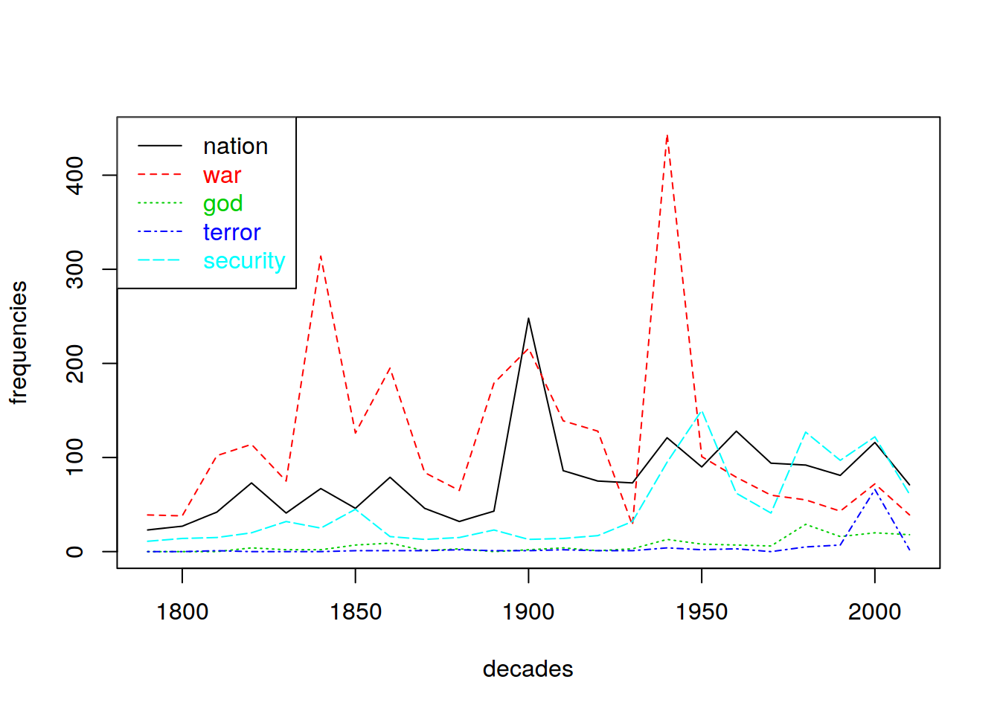
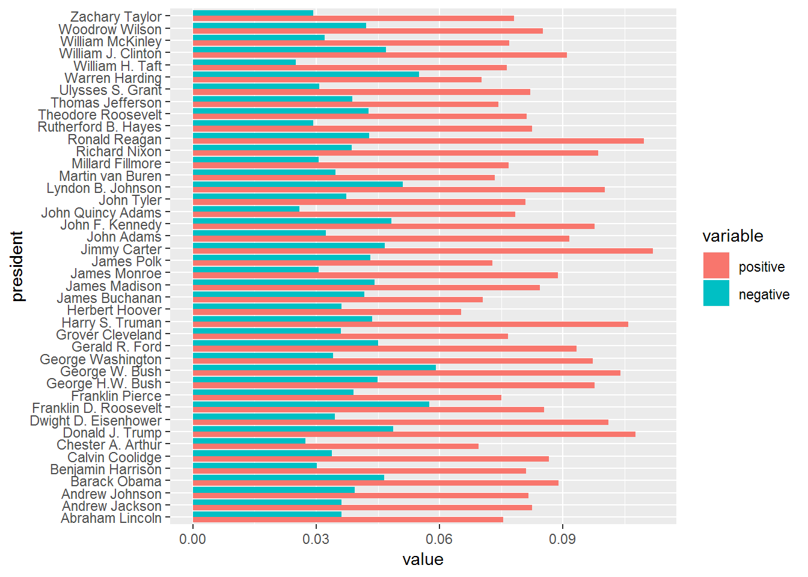
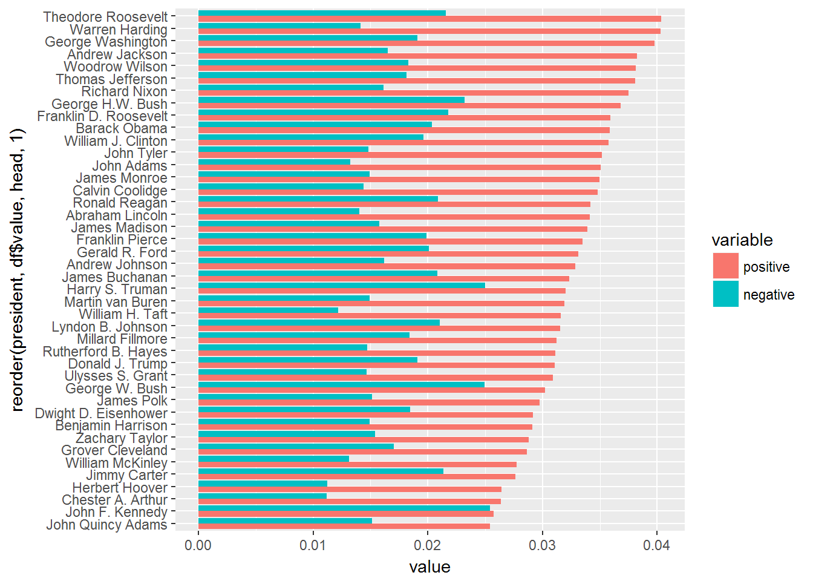
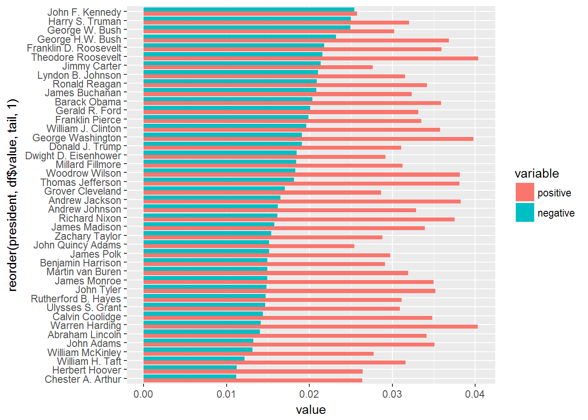
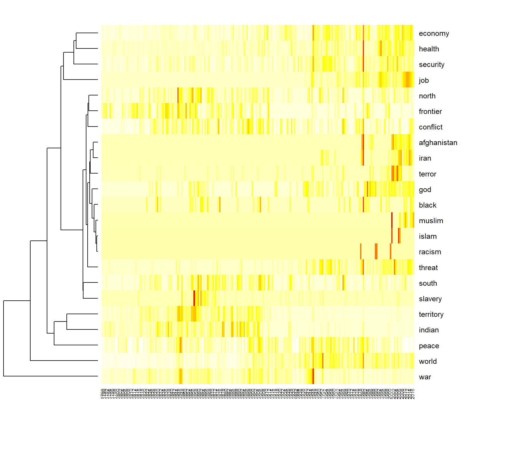

This tutorial introduces frequency analysis with basic R functions. We further introduce some text preprocessing functionality provided by the quanteda package.
options(stringsAsFactors = FALSE)
require(quanteda)
library(dplyr)Like in the previous tutorial we read the CSV data file containing the State of the union addresses. This time, we add two more columns for the year and the decade. For the year we select a sub string of the four first characters from the date column of the data frame (e.g. extracting “1990” from “1990-02-12”). For the decade we select a sub string of the first three characters and paste a 0 to it. In later parts of the exercise we can use these columns for grouping data.
textdata <- read.csv("data/sotu.csv", sep = ";", encoding = "UTF-8")
# we add some more metadata columns to the data frame
textdata$year <- substr(textdata$date, 0, 4)
textdata$decade <- paste0(substr(textdata$date, 0, 3), "0")Then, we create a corpus object again.
This time, we also apply lemmatization to the corpus. Lemmatization reduces (potentially) inflected word forms to its lexical baseform to unify similar semantic forms to the same text representation. For instance, ‘presidents’ becomes ‘president’ and ‘singing’ becomes ‘sing’.
Moreover, we apply different preprocessing steps to the corpus text. remove_punct leaves only alphanumeric characters in the text. remove_numbers removes numeric characters and remove_symbols removes all characters in the Unicode “Symbol” [S] class. Lowercase transformation is performed (need to be applied before lemma replacement!), and finally a set of English stop-words is removed.
sotu_corpus <- corpus(textdata$text, docnames = textdata$doc_id)
# Build a dictionary of lemmas
lemma_data <- read.csv("resources/baseform_en.tsv", encoding = "UTF-8")
# Create a DTM
corpus_tokens <- sotu_corpus %>%
tokens(remove_punct = TRUE, remove_numbers = TRUE, remove_symbols = TRUE) %>%
tokens_tolower() %>%
tokens_replace(lemma_data$inflected_form, lemma_data$lemma, valuetype = "fixed") %>%
tokens_remove(pattern = stopwords())Effects of this preprocessing can be printed in the console.
print(paste0("1: ", substr(paste(corpus_tokens[1],collapse = " "), 0, 400), '...'))We see that the text is now a sequence of text features corresponding to the selected methods (including lemmatization).
From the preprocessed corpus, we create a new DTM.
DTM <- corpus_tokens %>%
dfm() The resulting DTM should have 233 rows and 18167 columns.
We now want to measure frequencies of certain terms over time. Frequencies in single decades are plotted as line graphs to follow their trends over time. First, we determine which terms to analyze and reduce our DTM to this these terms.
terms_to_observe <- c("nation", "war", "god", "terror", "security")
DTM_reduced <- as.matrix(DTM[, terms_to_observe])The reduced DTM contains counts for each of our 5 terms and in each of the 233 documents (rows of the reduced DTM). Since our corpus covers a time span of more than 200 years, we could aggregate frequencies in single documents per decade to get a meaningful representation of term frequencies over time.
Information of each decade per document we added in the beginning to the textdata variable. There are ten speeches per decade mostly (you can check with table(textdata$decade). We use textdata$decade as a grouping parameter for the aggregate function. This function sub-selects rows from the input data (DTM_reduced) for all different decade values given in the by-parameter. Each sub-selection is processed column-wise using the function provided in the third parameter (sum).
counts_per_decade <- aggregate(DTM_reduced, by = list(decade = textdata$decade), sum)counts_per_decade now contains sums of term frequencies per decade. Time series for single terms can be plotted either by the simple plot function. Additional time series could be added by the lines-function (Tutorial 2). A more simple way is to use the matplot-function which can draw multiple lines in one command.
# give x and y values beautiful names
decades <- counts_per_decade$decade
frequencies <- counts_per_decade[, terms_to_observe]
# plot multiple frequencies
matplot(decades, frequencies, type = "l")
# add legend to the plot
l <- length(terms_to_observe)
legend('topleft', legend = terms_to_observe, col=1:l, text.col = 1:l, lty = 1:l) 
Among other things, we can observe peaks in reference to war around the US civil war, around 1900 and WWII. The term nation also peaks around 1900 giving hints for further investigations on possible relatedness of both terms during that time. References to security, god of terror appear to be more ‘modern’ phenomena.
Frequencies cannot only be aggregated over time for time series analysis, but to count categories of terms for comparison. For instance, we can model a very simple Sentiment analysis approach using lists of positive an negative words. Then, counts of these words can be aggregated w.r.t to any metadata. For instance, if we count sentiment words per president, we can get an impression of who utilized emotional language to what extent.
We provide a selection of very positive / negative English words extracted from an English Opinion Word Lexicon compiled by [1]. Have a look in the text files to see, what they consist of.
As an alternative, we also could use the AFINN sentiment lexicon from [2].
# English Opinion Word Lexicon by Hu et al. 2004
positive_terms_all <- readLines("data/positive-words.txt")
negative_terms_all <- readLines("data/negative-words.txt")
# AFINN sentiment lexicon by Nielsen 2011
afinn_terms <- read.csv("data/AFINN-111.txt", header = F, sep = "\t")
positive_terms_all <- afinn_terms$V1[afinn_terms$V2 > 0]
negative_terms_all <- afinn_terms$V1[afinn_terms$V2 < 0]To count occurrence of these terms in our speeches, we first need to restrict the list to those words actually occurring in our speeches. These terms then can be aggregated per speech by a simple row_sums command.
positive_terms_in_suto <- intersect(colnames(DTM), positive_terms_all)
counts_positive <- rowSums(DTM[, positive_terms_in_suto])
negative_terms_in_suto <- intersect(colnames(DTM), negative_terms_all)
counts_negative <- rowSums(DTM[, negative_terms_in_suto])Since lengths of speeches tend to vary greatly, we do want to measure relative frequencies of sentiment terms. This can be achieved by dividing counts of sentiment terms by the number of all terms in each document. The relative frequencies we store in a dataframe for subsequent aggregation and visualization.
counts_all_terms <- rowSums(DTM)
relative_sentiment_frequencies <- data.frame(
positive = counts_positive / counts_all_terms,
negative = counts_negative / counts_all_terms
)Now we aggregate not per decade, but per president. Further we do not take the sum (not all presidents have the same number of speeches) but the mean. A sample output shows the computed mean sentiment scores per president.
sentiments_per_president <- aggregate(relative_sentiment_frequencies, by = list(president = textdata$president), mean)
head(sentiments_per_president)## president positive negative
## 1 Abraham Lincoln 0.0751 0.0414
## 2 Andrew Jackson 0.0827 0.0386
## 3 Andrew Johnson 0.0785 0.0460
## 4 Barack Obama 0.0913 0.0515
## 5 Benjamin Harrison 0.0778 0.0346
## 6 Calvin Coolidge 0.0924 0.0364Scores per president can be visualized as bar plot. The package ggplot2 offers a great variety of plots. The package reshape2 offers functions to convert data into the right format for ggplot2. For more information on ggplot2 see: http://ggplot2.org
require(reshape2)
df <- melt(sentiments_per_president, id.vars = "president")
require(ggplot2)
ggplot(data = df, aes(x = president, y = value, fill = variable)) +
geom_bar(stat="identity", position=position_dodge()) + coord_flip()
The standard output is sorted by president’s names alphabetically. We can make use of the reorder command, to sort by positive / negative sentiment score:
# order by positive sentiments
ggplot(data = df, aes(x = reorder(president, df$value, head, 1), y = value, fill = variable)) + geom_bar(stat="identity", position=position_dodge()) + coord_flip()
# order by negative sentiments
ggplot(data = df, aes(x = reorder(president, df$value, tail, 1), y = value, fill = variable)) + geom_bar(stat="identity", position=position_dodge()) + coord_flip()
The overlapping of several time series in a plot can become very confusing. Heatmaps provide an alternative for the visualization of multiple frequencies over time. In this visualization method, a time series is mapped as a row in a matrix grid. Each cell of the grid is filled with a color corresponding to the value from the time series. Thus, several time series can be displayed in parallel.
In addition, the time series can be sorted by similarity in a heatmap. In this way, similar frequency sequences with parallel shapes (heat activated cells) can be detected more quickly. Dendrograms can be plotted aside to visualize quantities of similarity.
terms_to_observe <- c("war", "peace", "health", "terror", "islam",
"threat", "security", "conflict", "job",
"economy", "indian", "afghanistan", "muslim",
"god", "world", "territory", "frontier", "north",
"south", "black", "racism", "slavery", "iran")
DTM_reduced <- as.matrix(DTM[, terms_to_observe])
rownames(DTM_reduced) <- ifelse(as.integer(textdata$year) %% 2 == 0, textdata$year, "")
heatmap(t(DTM_reduced), Colv=NA, col = rev(heat.colors(256)), keep.dendro= FALSE, margins = c(5, 10))
heatmap of the terms “i”, “you”, “he”, “she”, “we”, “they” aggregated per president. Caution: you need to modify the preprocessing in a certain way!1. Hu, M., Liu, B.: Mining and summarizing customer reviews. In: Proceedings of the tenth acm sigkdd international conference on knowledge discovery and data mining. pp. 168–177. ACM, New York, NY, USA (2004).
2. Nielsen, F. Å.: AFINN, http://darenr.github.io/afinn, (2011).
2019, Andreas Niekler and Gregor Wiedemann. GPLv3. tm4ss.github.io